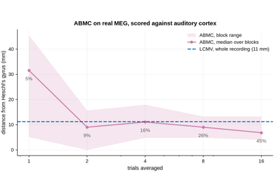

advance_beamlab.ABMCResult#
- class advance_beamlab.ABMCResult(stc: object, template_match: ndarray, power: ndarray, lag: ndarray, orientation: ndarray, weights: object, n_iter: int, converged: bool, blowup_fraction: float, critical_p: float, unstable_fraction: float)#
Result of an ABMC beamformer scan (Shirani et al., 2024, Stage 2).
See
make_abmc()and [1]. This is adataclass(), so the fields below are both its constructor parameters and its attributes;make_abmc()builds it for you.- Parameters:
- stcmne.SourceEstimate | mne.VolSourceEstimate | mne.MixedSourceEstimate
The localization map: the per-grid-point template match (see
template_match), as a single-time source estimate for plotting. Its class follows the source-space type of the forward, so it can be passed toplot(), source morphing andmne.extract_label_time_course()unchanged.- template_matchndarray, shape (n_sources,)
Primary localizer: \(|\mathrm{corr}(W^\mathsf{T}X, u_{j^*})|\), the absolute correlation between the beamformer output and the lag-aligned template, maximised over orientation at each grid point. The peak is the estimated source.
- powerndarray, shape (n_sources,)
The beamformer output variance \(\tfrac12 W^\mathsf{T}RW\) summed over orientations. This is the filter’s minimisation objective, and what LCMV would localise on. It is reported as a diagnostic only: neither the scan nor the orientation choice uses it, both being driven by
template_match.- lagndarray, shape (n_sources,)
Template lag \(j^*\) (samples) fixed per grid point for the winning orientation.
- orientationndarray, shape (n_sources,)
Index (0, 1, 2) of the orientation with the strongest template match at each grid point; all zeros for a fixed-orientation forward. It is the winner of three axis-aligned scalar beamformers, not a continuous orientation estimate, so it names an axis of the forward’s own source frame and neither it nor
template_matchis invariant to a rotation of that frame; see the Notes ofmake_abmc().- weightsndarray | None
Beamformer weights
(n_channels, n_columns)ifreturn_weights, elseNone.- n_iterint
Iterations actually run.
- convergedbool
Whether the weight update met the tolerance before
max_iter.- blowup_fractionfloat
Fraction of grid columns whose weights grew anomalously large, measured on the weights after the solve. Above ~0.05, lower
P. A small value is not an all-clear: this only detects the neighbourhood of the poles described undercritical_p, and returns to exactly zero forPwell beyond them, where the weights are finite but the localisation is wrong. Usecritical_pto decide thatPis safe.- critical_pfloat
Smallest
Pat which some grid column’s gain denominator \(g_n^\mathsf{T}g_n + P\,g_n^\mathsf{T}c_n\) vanishes, that is the smallest \(-g_n^\mathsf{T}g_n / g_n^\mathsf{T}c_n\) over the columns with \(g_n^\mathsf{T}c_n < 0\), andinfwhen there are none. Unlikeblowup_fraction, it is predicted from the forward and the constraint columns before the solve, and it remains valid for every largerPrather than only near the pole. Because each constraint column is rescaled to the norm of its leadfield column, a column’s pole is exactly \(1/|\cos(g_n, c_n)|\), so this is never below 1 for any dataset. It is the pole of the iterative descent’s denominator and an upper bound on where that descent loses stability, not the exact threshold and not the closed-form solver’s pole; see the Notes ofabmc_stability_curve().- unstable_fractionfloat
Fraction of grid columns with \(g_n^\mathsf{T}c_n < 0\), that is the share of the grid that has a finite pole at all. Also predicted before the solve. It says how much of the grid
critical_pspeaks for, not that anything has gone wrong at thePactually used.
References
Examples using ABMCResult#

ABMC on a real recording, and where it stops